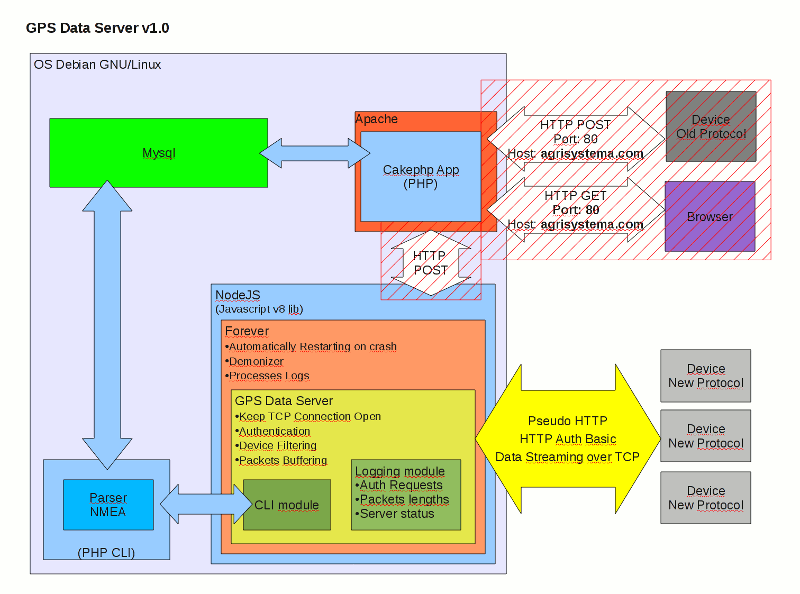
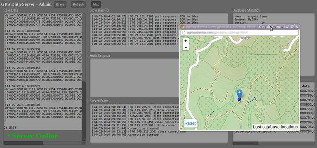
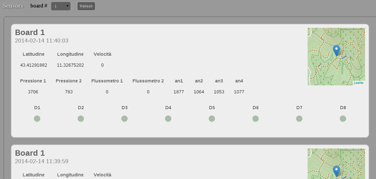
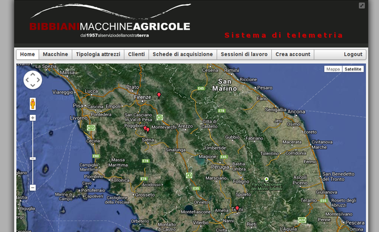
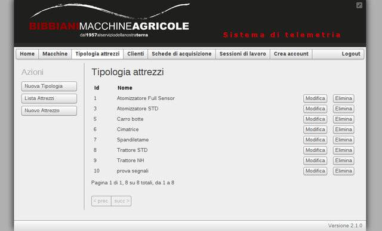
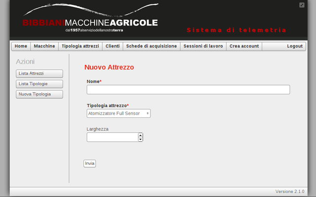
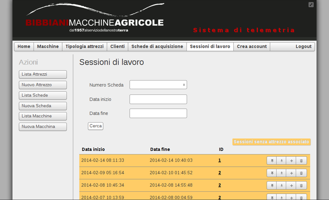
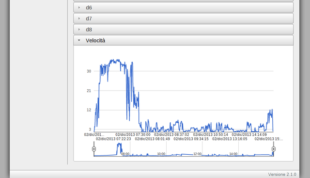

Data Server - Daemon Architecture
Realtime GPS Streaming Daemon in
NodeJS
.
Remote data collection system for
Agrisystema

GPS Data Server - Back-end
Real-time monitoring
of data acquisitions, Logs and Statistics
 
Agrisystema - Telemetry System
Front-end
for accounts and devices management
    
Opengeo.tech
•
Stefano Cudini